Soru 1Cevap: C
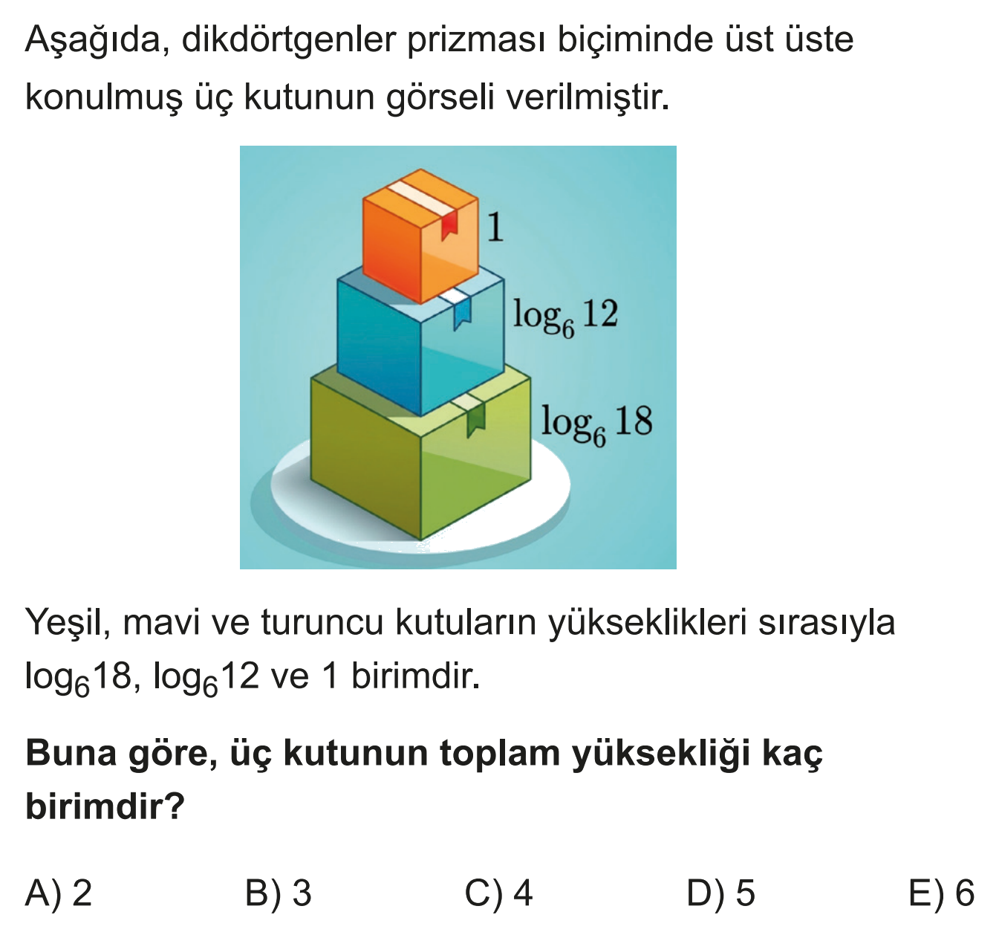
Çözüm
- Toplam yükseklik $\log_618+\log_612+1$.
- $\log_6(18\cdot12)=\log_6216=3$.
- $3+1=4$ (C).
Cevap: C
Soru 2Cevap: B
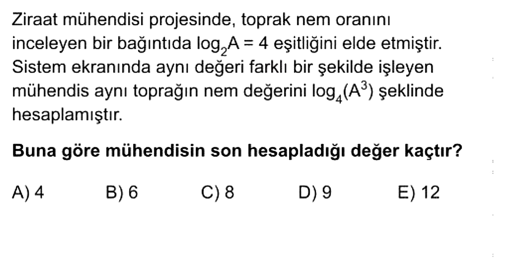
Çözüm
- $\log_2A=4\Rightarrow A=16$.
- $\log_4A^3=3\log_4A=3\cdot2$.
- $=6$ (B).
Cevap: B
Soru 3Cevap: C
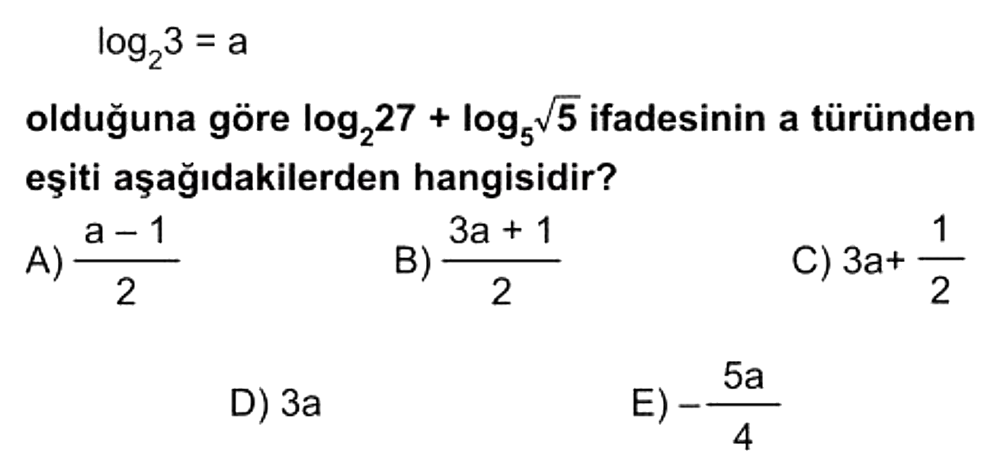
Çözüm
- $\log_227=3\log_23=3a$.
- $\log_5\sqrt5=\tfrac12$.
- $3a+\tfrac12$ (C).
Cevap: C
Soru 4Cevap: A
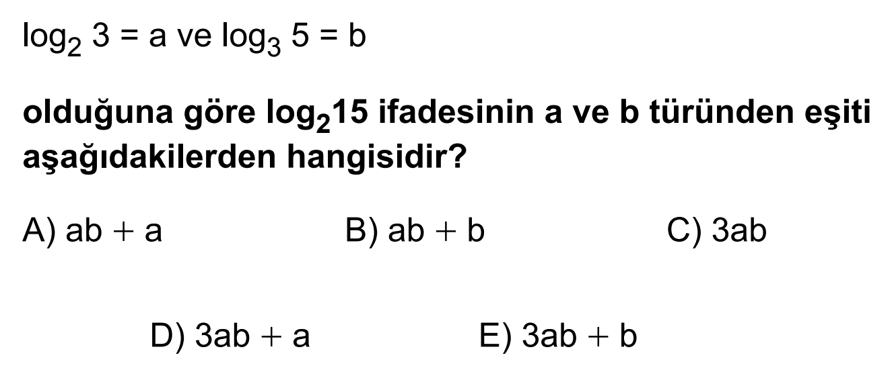
Çözüm
- $\log_215=\log_23+\log_25$.
- $\log_25=\log_23\cdot\log_35=ab$.
- $=ab+a$ (A).
Cevap: A
Soru 5Cevap: A
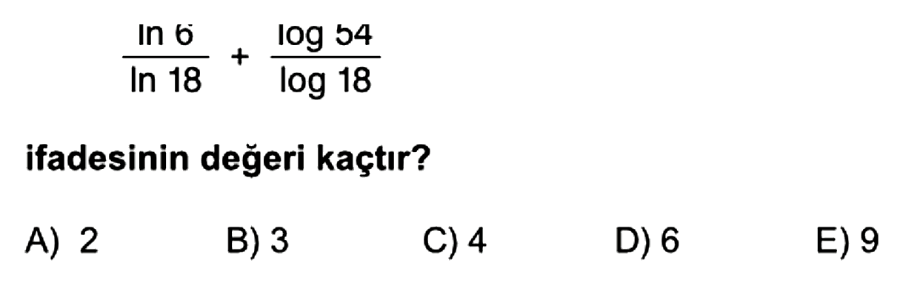
Çözüm
- $\dfrac{\ln6}{\ln18}=\log_{18}6$, $\dfrac{\log54}{\log18}=\log_{18}54$.
- Toplam $\log_{18}324$.
- $=2$ (A).
Cevap: A
Soru 6Cevap: D
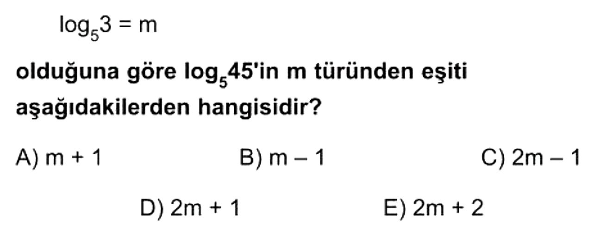
Çözüm
- $45=9\cdot5$.
- $\log_545=2\log_53+1$.
- $=2m+1$ (D).
Cevap: D
Soru 7Cevap: B
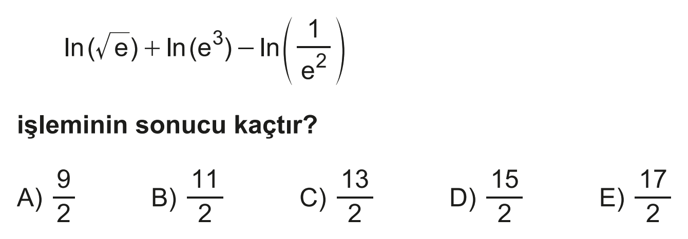
Çözüm
- $\ln\sqrt e=\tfrac12$, $\ln e^3=3$.
- $\ln\dfrac1{e^2}=-2$.
- $\tfrac12+3-(-2)=\tfrac{11}2$ (B).
Cevap: B
Soru 8Cevap: D
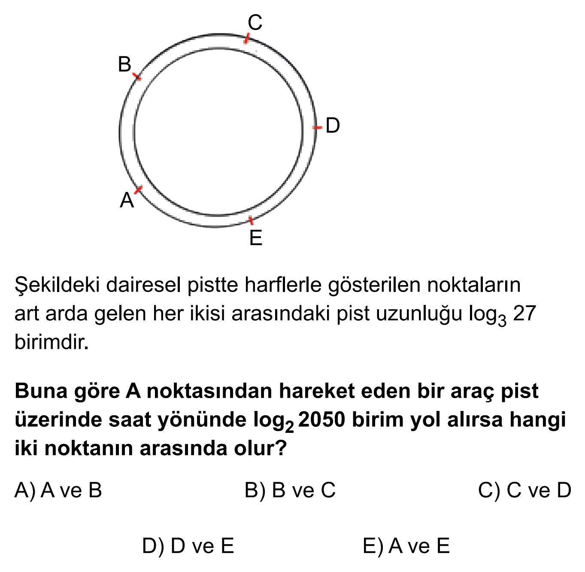
Çözüm
- Ardışık iki nokta arası $\log_327=3$ birim: $A\to B\to C\to D\to E$ için $3,6,9,12$.
- $2^{11}=2048\lt2050$: $\log_22050\approx11{,}001$.
- $9\lt11{,}001\lt12$: araç $D$ ile $E$ arasında (D).
Cevap: D
Soru 9Cevap: B
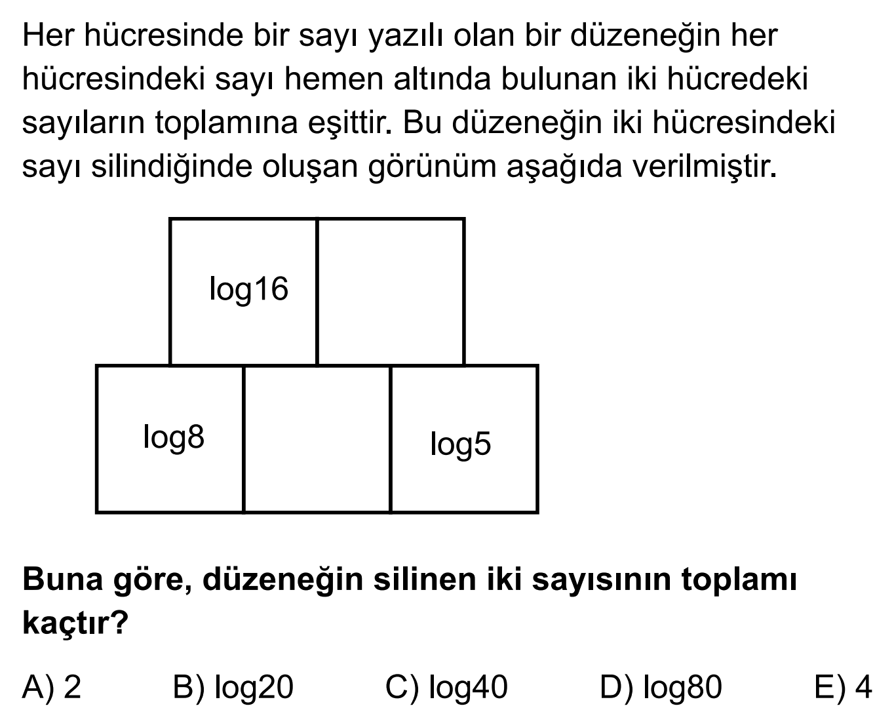
Çözüm
- $\log16=\log8+x\Rightarrow x=\log2$.
- Üst sağ hücre: $\log2+\log5=\log10=1$.
- Silinenlerin toplamı $\log2+1=\log20$ (B).
Cevap: B
Soru 10Cevap: B
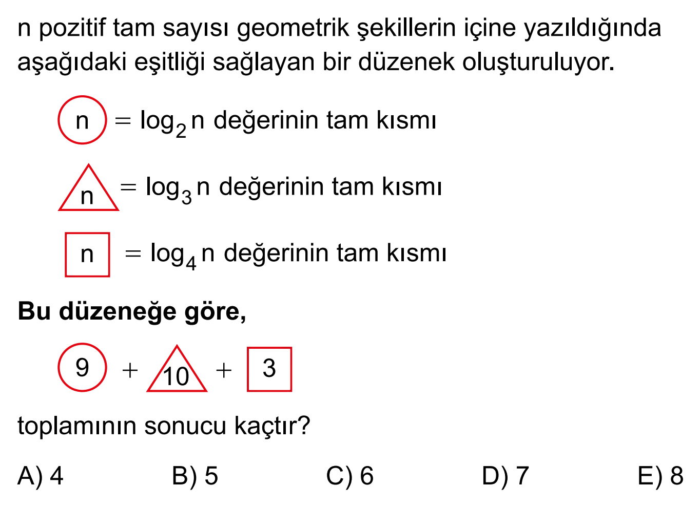
Çözüm
- $[\log_29]=3$ ($8\lt9\lt16$).
- $[\log_310]=2$ ($9\lt10\lt27$), $[\log_43]=0$.
- Toplam $5$ (B).
Cevap: B
Soru 11Cevap: B
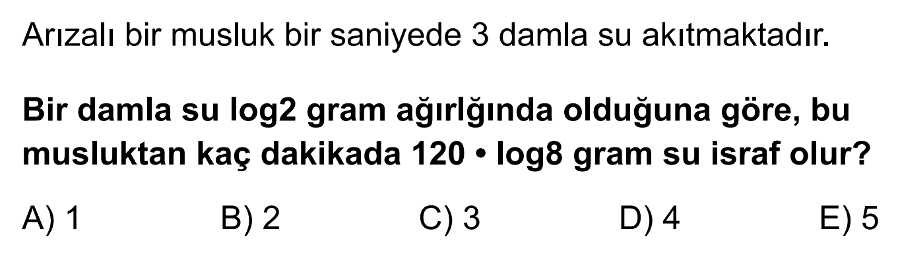
Çözüm
- $120\log8=360\log2$ gram.
- Bir damla $\log2$ gram: $360$ damla.
- Saniyede $3$ damla: $120$ s $=2$ dakika (B).
Cevap: B
Soru 12Cevap: E
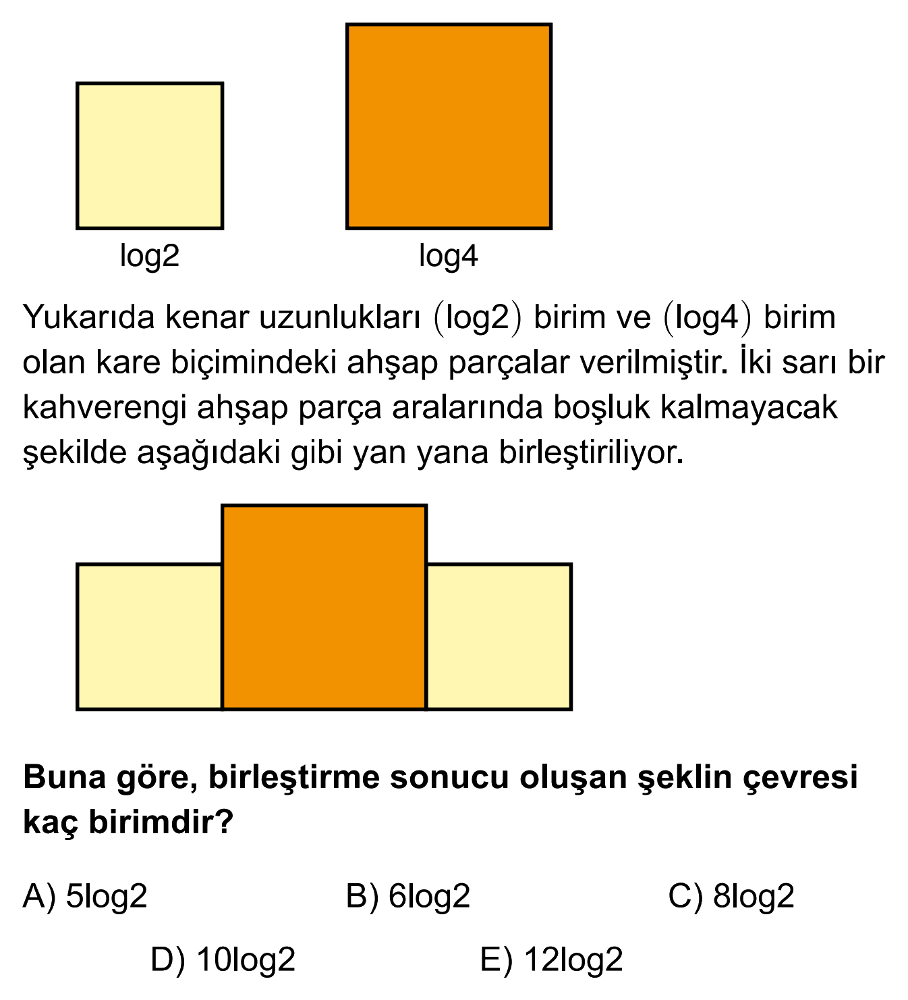
Çözüm
- $\log4=2\log2$: küçük kare kenarı $L=\log2$, büyük kare $2L$.
- Genişlik $4L$ (alt ve üst toplamı $8L$), dikey kenarlar toplamı $L+L+L+L=4L$.
- Çevre $12L=12\log2$ (E).
Cevap: E
Soru 13Cevap: A
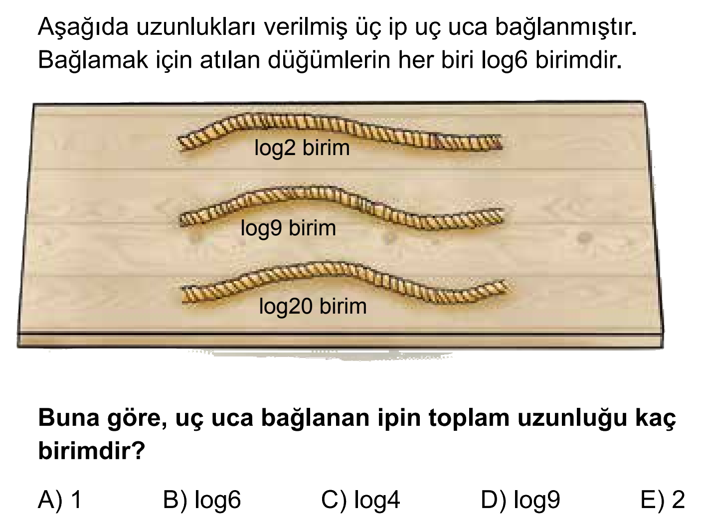
Çözüm
- Üç ip toplam $\log2+\log9+\log20=\log360$.
- İki düğüm $2\log6=\log36$ kısaltır.
- $\log360-\log36=\log10=1$ (A).
Cevap: A
Soru 14Cevap: D
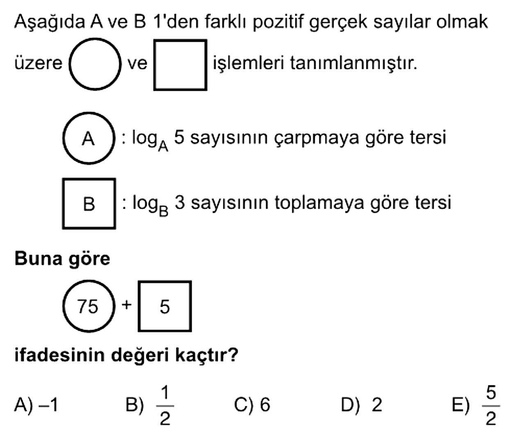
Çözüm
- Daire: $\dfrac1{\log_{75}5}=\log_575=2+\log_53$.
- Kare: $-\log_53$.
- Toplam $2$ (D).
Cevap: D
Soru 15Cevap: D
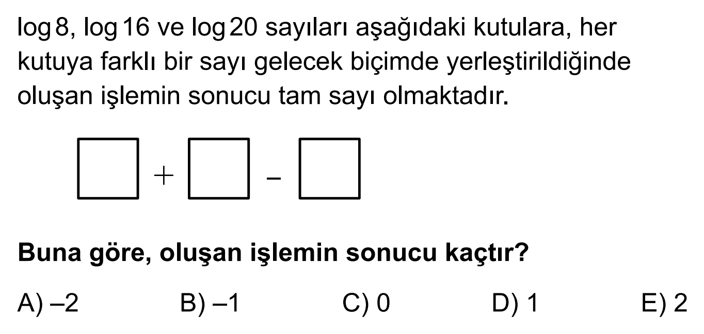
Çözüm
- Sonucun tam sayı olması için: $\log8+\log20-\log16=\log\dfrac{160}{16}$.
- $=\log10$.
- $=1$ (D).
Cevap: D
Soru 16Cevap: B
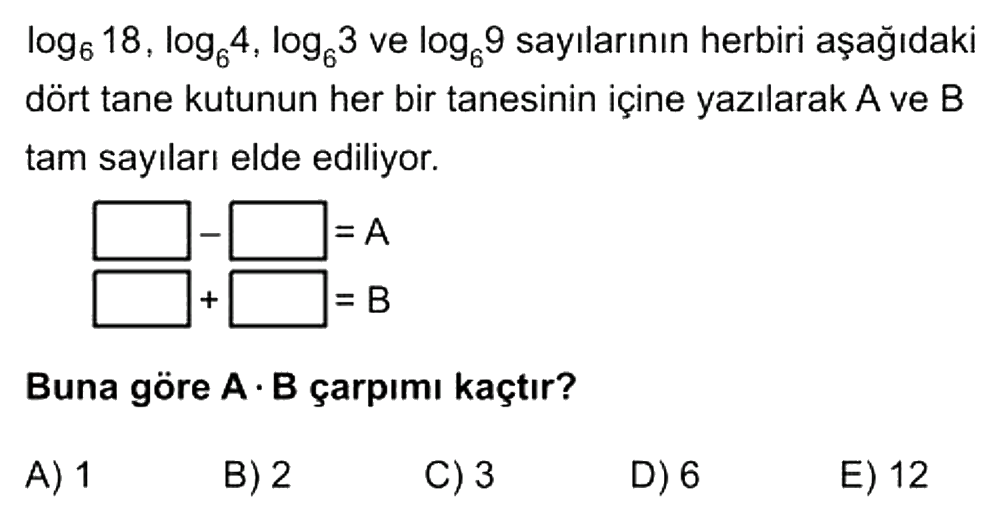
Çözüm
- Tam sayı için: $A=\log_618-\log_63=\log_66=1$.
- $B=\log_64+\log_69=\log_636=2$.
- $A\cdot B=2$ (B).
Cevap: B
Soru 17Cevap: A
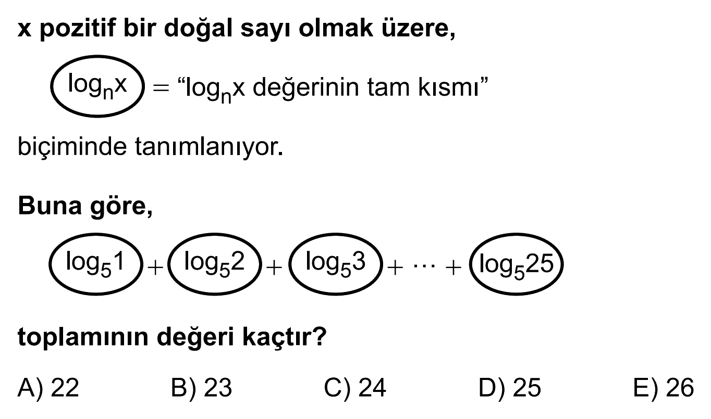
Çözüm
- $x=1,\dots,4$: $[\log_5x]=0$.
- $x=5,\dots,24$: $1$ (20 terim); $x=25$: $2$.
- Toplam $20+2=22$ (A).
Cevap: A
Soru 18Cevap: A
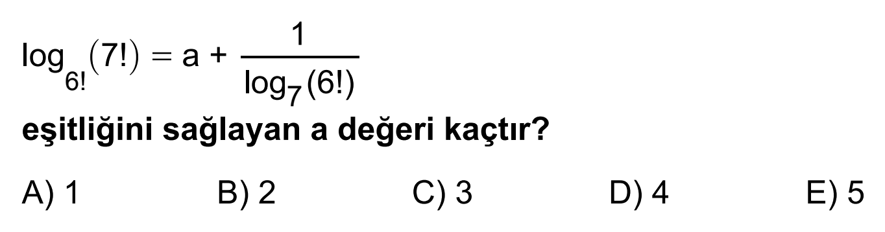
Çözüm
- $\log_{6!}7!=\log_{6!}(7\cdot6!)=1+\log_{6!}7$.
- $\log_{6!}7=\dfrac1{\log_7(6!)}$.
- $a=1$ (A).
Cevap: A
Soru 19Cevap: C
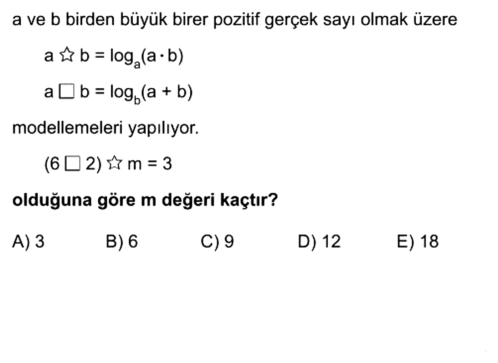
Çözüm
- $6\,\square\,2=\log_2(6+2)=3$.
- $3\,☆\,m=\log_3(3m)=3$.
- $3m=27\Rightarrow m=9$ (C).
Cevap: C
Soru 20Cevap: D
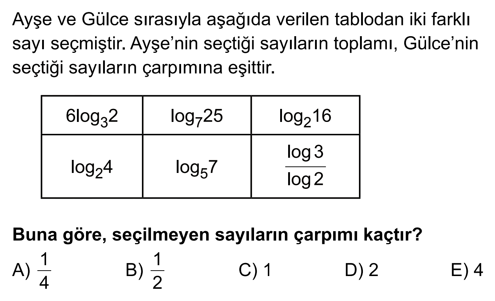
Çözüm
- $\log_216+\log_24=6$ ve $6\log_32\cdot\dfrac{\log3}{\log2}=6\log_32\cdot\log_23=6$: toplam = çarpım.
- Seçilmeyenler $\log_725$ ve $\log_57$.
- $\log_725\cdot\log_57=2\log_75\cdot\log_57=2$ (D).
Cevap: D
Soru 21Cevap: D
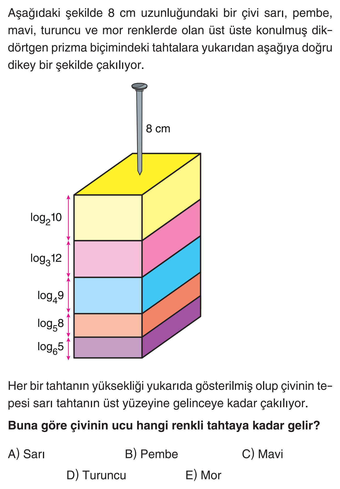
Çözüm
- $\log_210\approx3{,}32$, $\log_312\approx2{,}26$, $\log_49\approx1{,}58$: toplam $\approx7{,}17\lt8$.
- $\log_58\approx1{,}29$: toplam $\approx8{,}46\gt8$.
- Çivi turuncu tahtada biter (D).
Cevap: D
Soru 22Cevap: C
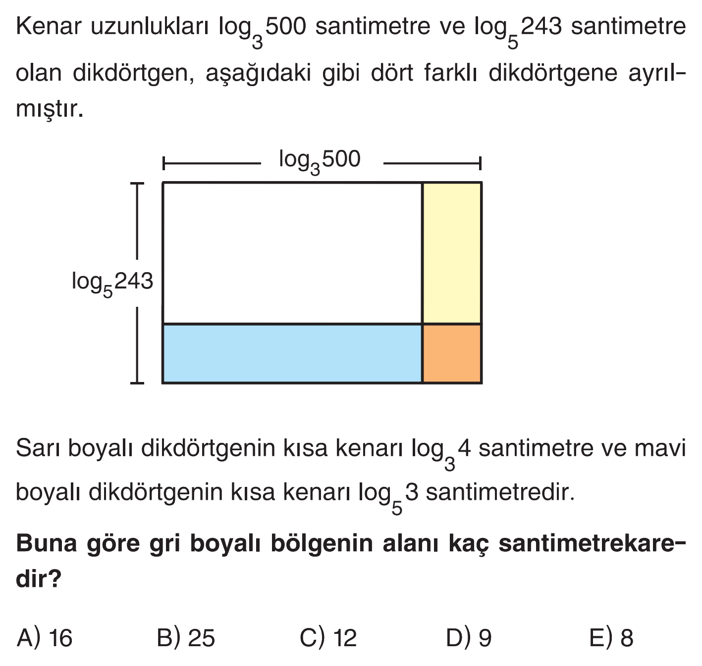
Çözüm
- Gri bölgenin kenarları: $\log_3500-\log_34=\log_3125$ ve $\log_5243-\log_53=\log_581$.
- Alan $=3\log_35\cdot4\log_53$.
- $=12$ cm² (C).
Cevap: C
Soru 23Cevap: B
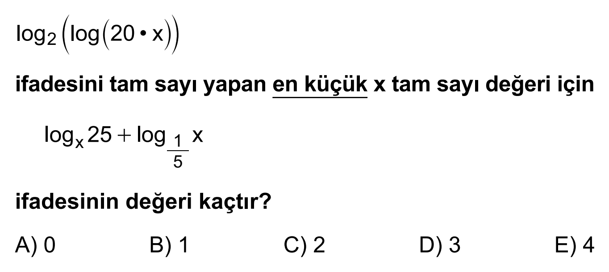
Çözüm
- $\log_2(\log(20x))$ tam sayı: $\log(20x)=2^k$; $k=0\Rightarrow x=\tfrac12$, $k=1\Rightarrow x=5$.
- En küçük tam sayı $x=5$.
- $\log_525+\log_{1/5}5=2-1=1$ (B).
Cevap: B
Soru 24Cevap: B
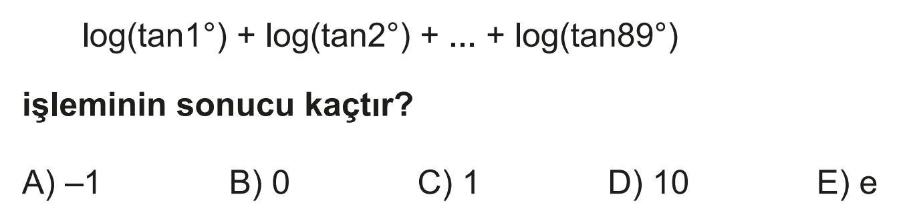
Çözüm
- Toplam $=\log(\tan1^\circ\cdot\tan2^\circ\cdots\tan89^\circ)$.
- $\tan x\cdot\tan(90^\circ-x)=1$: çarpımlar $1$, ortadaki $\tan45^\circ=1$.
- $\log1=0$ (B).
Cevap: B